Хочу пойти сам
Соберите рюкзак и выберите тропу
Открытое исследование Гималаев: тропы, горы, природа, ремёсла. Всё бесплатно, без рекламы и без продаж.
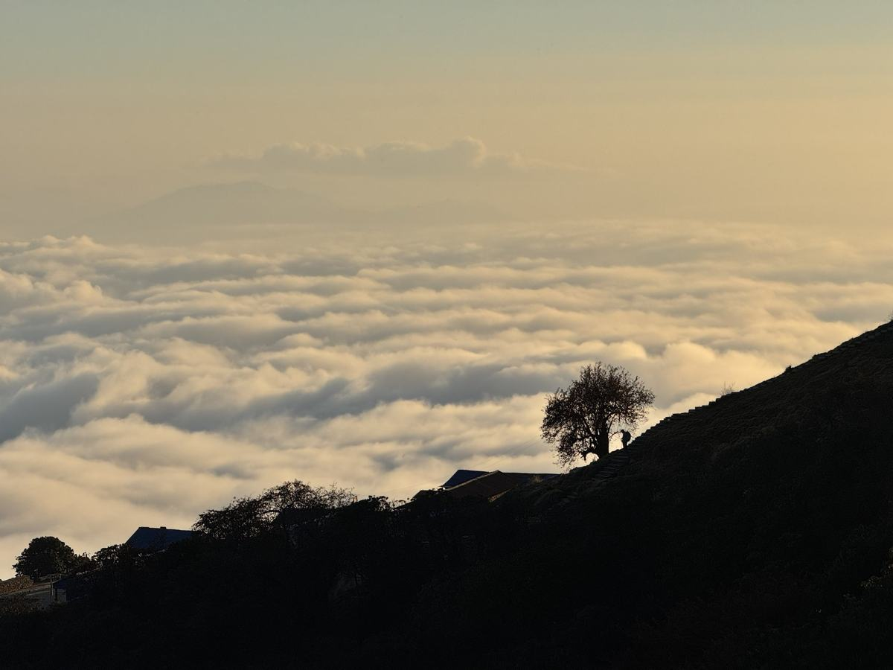
Бадал-Данда, 26 ноября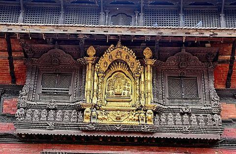
Rajesh Dhungana · CC BY-SA 4.0Обо мне
Я живу в Непале. Помогала здесь кафе и гестхаусу, а в свободное время по крупицам собирала всё про треки, горы, природу и ремёсла.
Из этого выросли 13 больших исследований: дикоросы, снаряжение, жильё, ремёсла, как устроить поход, чтобы он был в радость.
Потом ко мне присоединился Дима и превратил записи в страницы, карты и инструменты. Они собраны здесь.
Всё открыто. Берите, повторяйте маршруты сами или идите с нами.
Алина Шикуть
Выберите, что вам ближе. Всё открывается в новой вкладке
Соберите рюкзак и выберите тропу
Кольцо Аннапурны малой группой
Наш поход вдвоём день за днём
Тропы и журналы с картами · 7 страниц
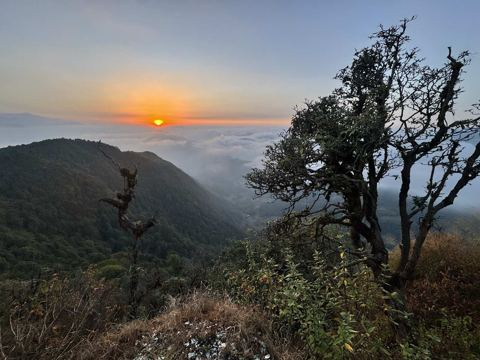
Маршрут этого походаПлан, из которого вырос наш трек; по ходу меняемфото наше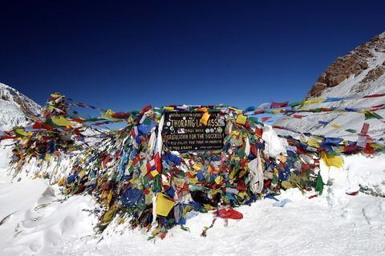
Кольцо АннапурныПрограмма на март 2027Kondephy · CC BY-SA 4.0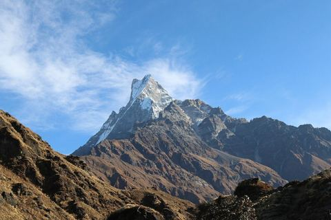
Марди снизу3D-журнал похода вдвоёмAasish Shah · CC BY-SA 4.0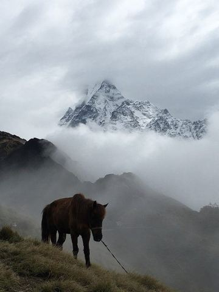
Журнал «Марди Химал»Хребет под МачапучареNeyox · CC BY-SA 4.0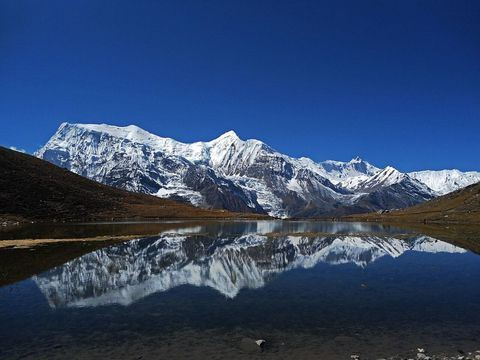
Журнал «Gravity Falls»Треки по датам и сезонамBiman Shrestha · CC BY-SA 3.0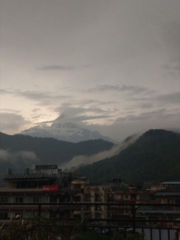
Полевая базаМаршруты вокруг Покхары с ценамиKartik Menda · CC BY-SA 4.0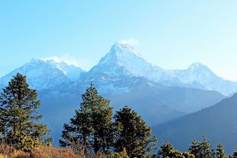
Горы вокруг ПокхарыКороткие треки рядом с городомAditya Pal · CC BY-SA 4.0Что встретишь на тропе · 2 страницы
Как собраться и натренироваться · 4 страницы
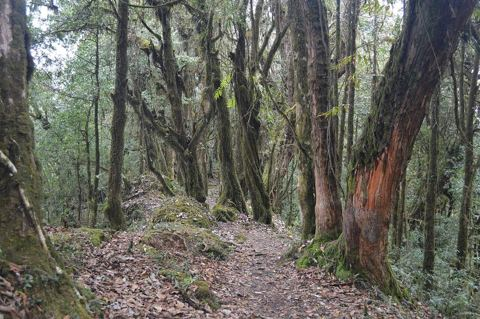
Рюкзак Gravity FallsЧто взять и что арендоватьDklpradeep · CC BY-SA 4.0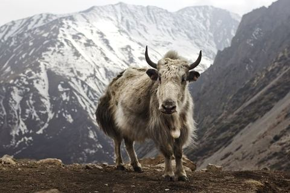
Подготовка с яком ЧауриПлан тренировок за 2 неделиtravelwayoflife · CC BY-SA 2.0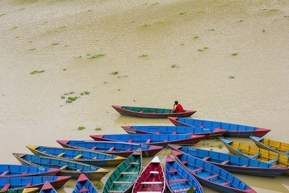
Распорядок экспедицииДень на тропе по часамSaroj Pandey · CC BY-SA 4.0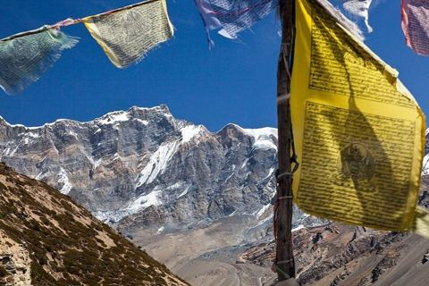
Бот «Подходит ли снаряжение?»Telegram: фото вещи → ответскороГорода до и после тропы · 4 страницы
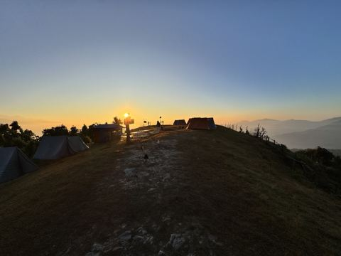
Где пожить в горах29 тихих мест Непала на месяц-трифото наше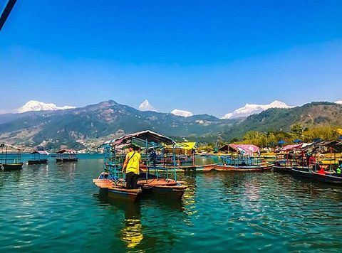
Покхара: отели и спаГде жить и отдыхатьRojeek5 · CC BY-SA 4.0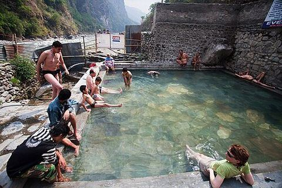
Пар и бани КатмандуСауны, хамамы, источникиПар Катманду ›Подробный гид по баням ›Greg Willis from Denver, CO, usa · CC BY-SA 2.0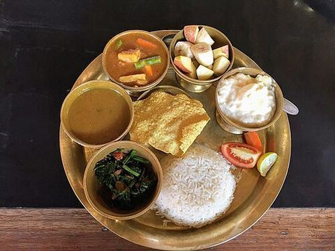
Покупки в БхатбхатениЧек-лист для жизни в КатмандуSubhashish Panigrahi · CC BY-SA 4.0Скоро: цены с тропы · сказка про яка Чаури · открытые данные для ИИ
Сейчас в пути
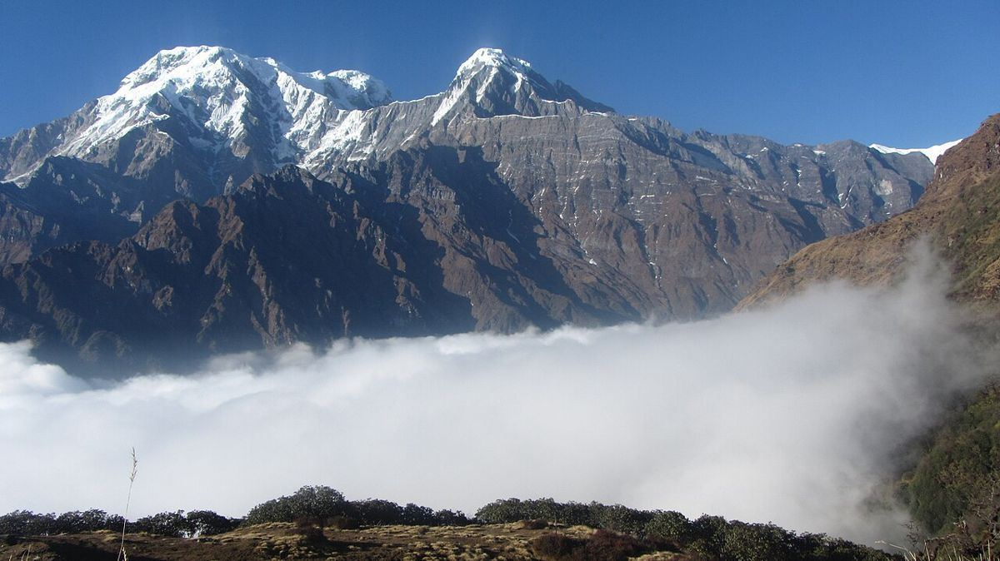
по дороге к Бадал-Данде22 ноября – 1 декабря 2026, девять ночей: Австралийский лагерь, лес, полнолуние в Лоу-кэмпе, ночь на гребне Бадал-Данда, источники Джину и Гандрук.
Журнал похода с 3D-картойСкоро начнём отмечать, где мы
Налегке пошли к смотровой: думали, на верхнюю, а забрались на нижнюю. Видели редкую птицу данфи. К закату вернулись на свой холм.
Дневник с тропы →Поддержать
Всё на сайте бесплатно. Если исследование помогло вам собраться в горы или просто понравилось, его можно поддержать: отсканируйте QR или скопируйте реквизиты.
из России, по QR или ссылке
Реквизиты скоро появятся
из любой страны · только сеть TRC20
Реквизиты скоро появятся
из Казахстана
Реквизиты скоро появятся
из любой страны
Реквизиты скоро появятся
подписка или разовая поддержка
Реквизиты скоро появятся
Перевод USDT — только в сети TRC20 (Tron). В другой сети деньги могут не дойти.
Март 2027
Весной идём по Кольцу Аннапурны малой группой, когда цветут рододендроны. Если хочется пойти вместе, напишите, расскажем подробности.
Контакт для записи скоро